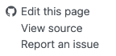

This post is an introduction on how to edit the website (rave.wiki), which completely runs on Github with no dedicated hosting servers.
To start, you must have a Github account and must apply to be a member of rave-ieeg group.
1. Create a new documentation
If you want to edit an existing page, see 3. Edit an existing page
All the documentation files are stored at directory posts/, which contains several folders that roughly classify the documents.
To add a new documentation page, open https://github.com/rave-ieeg/rave-ieeg.github.io/tree/main/posts. Please select a proper folder for the document, click on “Add File” button (see Figure 1), and click on “Create new file”.

Figure 1: Screenshot of Github buttons to create a new file. Github will open its online editor. The first thing to do is to give your new baby a good name, which should start with letters (
a-zorA-Z) and often end with file extension.md(stands for “Markdown” format).
Figure 2: Create a new file name: avoid special letters especially /in the file name (unless you want to create a folder). Filenames starting with_will be “hidden” markdown snippets that will not be rendered as a page. However, it can be included in other documents (see Section “[3. Edit markdown files]” below).After choosing the file name, copy the following meta header into the content box. Make sure you copy the entire header (including “
---”). Edit the key information such astitle,description,date,author, andcategoriesas they will affect how the page is arranged and displayed in the Documentation page.--- title: "How to Edit this Website" description: | Editor's notes on how to edit this website date: 2024-09-01 author: - name: Zhengjia Wang affiliations: - name: "Dept. of Neurosurgery, University of Pennsylvania" categories: - "Editor's Notes" copyright: holder: Beauchamp's Lab year: 2024 ---Start a new line after the second dash “
---”, and now you can begin editing the content (See Section “[3. Edit markdown files]” below on how to format your content).
2. Save the page
We all have experienced losing unsaved work. To avoid such frustration, it is a good practice to save the page before you regret.
On Github, “saving the work” is called Commit changes. To commit the pages you have just created, simply scroll up to the top of the editor, and you will see the button Commit changes with an outstanding color (green?). Click on this button, please ensure that the commit is made directly to the main branch. You are more than welcome to comment on the changes. For example, “This is my first page!”, “I feel fantastic”, or “The best Philly cheese steak I’ve ever had was in Houston” for back-tracking the website history. However, comment is completely optional.
3. Edit an existing page
To edit an existing page, you need to find the location of the source document. The easiest method is to open the RAVE website and navigate to the page that you want to edit. The content-bar should contain the following options:

Click on “ Edit this page”, and the browser should take you directly to the editor page. Please BE AWARE that if Github asks you to “fork” the project, DON’T do it. Check if you have logged out of the Github. Please make sure you are logged into the Github!
4. Edit markdown files
This website is based on Pandoc and uses its variation of markdown as its underlying document syntax. Markdown is a plain text format that is designed to be easy to write, and, even more importantly, easy to read.
There are many tutorials on how to edit markdown files. The following tutorial comes from quarto documentation. Most of the time you only need to remember the basics such as text formatting, headings, list, links and images.
Here is a list of common types. Pick one to see the format:
Links & Images
If you want to include your own figures, please upload figures from Github. Make sure the figure is at the same directory as the markdown file.
| Markdown Syntax | Output |
|---|---|
link |
https://rave.wiki |
link with different text |
RAVE Website |
image |
|
image with 30% width |
|
image with link |
 |
image with link and tooltip (hover text) |
|
image with link: alt-text when image is missing |
 |
Videos
You can include videos in documents using the {{< video >}} shortcode. For example, here we embed a YouTube video:
{{< video https://www.youtube-nocookie.com/embed/watch?v=hfHZMfqIaGY >}}Videos can refer to video files (e.g. MPEG) or can be links to videos published on YouTube, Vimeo, or Brightcove. Learn more in the article on Videos.
Here are some advanced usages:
Callout
Callouts are an excellent way to draw extra attention to certain concepts, or to more clearly indicate that certain content is supplemental or applicable to only some scenarios.
There are five different types of callouts available.
notewarningimportanttipcaution
The color and icon will be different depending upon the type that you select. Here are what the various types look like in HTML output:
Note that there are five types of callouts, including: note, tip, warning, caution, and important.
Callouts provide a simple way to attract attention, for example, to this warning.
Danger, callouts will really improve your writing.
This is an example of a callout with a title.
This is an example of a ‘collapsed’ caution callout that can be expanded by the user. You can use collapse="true" to collapse it by default or collapse="false" to make a collapsible callout that is expanded by default.
Markdown Syntax
Create callouts in markdown using the following syntax (note that the first markdown heading used within the callout is used as the callout heading):
::: {.callout-note}
Note that there are five types of callouts, including:
`note`, `warning`, `important`, `tip`, and `caution`.
:::
::: {.callout-tip}
## Tip with Title
This is an example of a callout with a title.
:::
::: {.callout-caution collapse="true"}
## Expand To Learn About Collapse
This is an example of a 'folded' caution callout that can be expanded by the user. You can use `collapse="true"` to collapse it by default or `collapse="false"` to make a collapsible callout that is expanded by default.
:::Note that above callout titles are defined by using a heading at the top of the callout. If you prefer, you can also specify the title using the title attribute. For example:
::: {.callout-tip title="Tip with Title"}
This is a callout with a title.
:::Customizing Appearance
Collapse
You can create ‘folded’ callouts that can be expanded by the user by settings the collapse attribute on the callout. If you set collapse=true, the callout will be expandable, but will be collapsed by default. If you set collapse=false, the callout will be expandable, but will be expanded by default.
Appearance
Callouts have 3 different looks you can use.
default |
The default appearance with colored header and an icon. |
simple |
A lighter weight appearance that doesn’t include a colored header background. |
minimal |
A minimal treatment that applies borders to the callout, but doesn’t include a header background color or icon. |
5. View the results
5.1 Preview during the editing
Github online editor provides a decent tool for previewing the results before publishing changes. This feature allows you to test different formatting ideas before saving changes. To preview the page, scroll up to the top of the editor and click on the Preview button right next to Edit. The markdown pre-render results will show up. To continue editing the pages, click on Edit button and the viewer will switch back.
| “Edit” mode | “Preview” mode |
|---|---|
5.2 View the final results
When you commit (save) the changes to the Github main repository branch, an Github bot will be invoked to render the whole website. This process is completely automatic and normally requires no manual intervention. Here is the link if you would like to track the progress out of curiosity: https://github.com/rave-ieeg/rave-ieeg.github.io/actions. The rendering process usually costs several minutes before the updates are deployed to RAVE website.

Example Footnotes
Here is the footnote.↩︎
Here is the footnote.↩︎
Here’s one with multiple blocks.
Subsequent paragraphs are indented to show that they belong to the previous footnote.
{ some.code }The whole paragraph can be indented, or just the first line. In this way, multi-paragraph footnotes work like multi-paragraph list items.↩︎
Inlines notes are easier to write, since you don’t have to pick an identifier and move down to type the note.↩︎